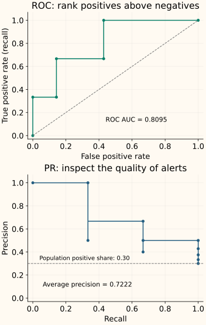

Evaluating Under Imbalance
Under imbalance, “how good is the model?” splits into three questions: Are its decisions useful? Does it rank the right cases first? Can we trust its probabilities? A single metric rarely answers all three.
The introductory example already defines precision, recall and confusion counts. Here we use them to build an evaluation report, explain the effect of prevalence, and distinguish average precision from an interpolated PR area.
Start with the operating decision
A score becomes a positive prediction when it passes a chosen threshold. At that threshold, report true positives (TP), false positives (FP), false negatives (FN) and true negatives (TN). Also report how many observations were evaluated and which class was called positive.
For the earlier detector, TP = 8, FP = 20, FN = 2 and TN = 970. The same counts support several summaries:
| Metric | Calculation here | What it emphasizes |
|---|---|---|
| Precision | 8 / 28 ≈ 28.6% | The fraction of alerts that are real positives. |
| Recall | 8 / 10 = 80% | The fraction of actual positives that are detected. |
| F1 | 2 × 8 / (2 × 8 + 20 + 2) ≈ 0.4211 | A harmonic-mean summary of precision and recall; it does not include TN. |
| Balanced accuracy | (8 / 10 + 970 / 990) / 2 ≈ 89.0% | Equal weight for each class’s recall, regardless of its count. |
| Alert load | 28 / 1,000 = 2.8% | The fraction of incoming cases sent to the positive action. |
Balanced accuracy averages positive recall with negative recall, also called specificity. F1 summarizes a different tradeoff. Neither automatically represents the costs of mistakes or a fixed review capacity. If reviewers can inspect only 20 cases per day, report performance at that capacity and state how tied scores are handled.
Precision changes when positives become rarer
Keep a detector’s recall at 80% and its false positive rate at 2%. The latter means it flags 2% of actual negatives, not that 2% of its alerts are wrong. Apply those rates to 10,000 cases with 1% positive prevalence:
There are 100 positives, of which 80 are detected, and 9,900 negatives, of which 198 raise false alarms. Precision is 80 / (80 + 198) ≈ 28.8%. A small false positive rate can create many false alerts because it acts on a large negative population.
Alerts: 80 true positives (blue) + 198 false positives (orange).
The short formula behind the population calculation
Write $\pi$ for the positive fraction, TPR for recall and FPR for the false positive rate. The true-positive fraction of all cases is TPR × $\pi$; the false-positive fraction is FPR × $(1-\pi)$. Dividing the first by their sum gives
This is why precision from a deliberately balanced evaluation set does not directly predict alert quality in a much rarer-positive population.
ROC and precision–recall curves ask different questions
Sweeping a threshold produces many confusion matrices. A ROC curve plots recall against the false positive rate. A precision–recall (PR) curve plots precision against recall. The first normalizes within each actual class; the second shows the mix of positive and negative cases among alerts.
For a small example, rank ten observations by decreasing score. Their labels are + − + − − + − − − −: three positives at ranks 1, 3 and 6. Unlike the 1% example above, this deliberately small dataset has 30% positives so every threshold is easy to inspect.

ROC AUC is the probability that a randomly selected positive outranks a randomly selected negative, counting a tied pair as half. Here it is 17 / 21 ≈ 0.8095. It summarizes all thresholds, so a good overall area can coexist with poor behavior in the small false-positive-rate region you can afford.
Average precision (AP) summarizes precision as recall increases. Here, each newly recovered positive adds one third of total recall, so AP is (1/1 + 2/3 + 3/6) / 3 ≈ 0.7222. Equal-score observations must enter together; arbitrary ordering within a tie would invent distinctions the model did not make.
AP is not every quantity called “PR AUC”
Let $R_n$ and $P_n$ be recall and precision after admitting the next score group, starting from $R_0=0$. Each recall gain weights the precision at that step:
Scikit-learn’s average_precision_score uses this non-interpolated convention. Applying trapezoidal integration to the PR points gives about 0.6778 for this same example, not 0.7222. Report the function or interpolation convention when naming a PR area.
Neither area selects the operating threshold for you. Compare the region relevant to the task, then choose the decision rule on validation data. The threshold chapter keeps that selection separate from the final test.
Ranking quality does not establish probability quality
A score can rank cases correctly while being overconfident. Calibration asks whether cases assigned, for example, 20% probability are positive about 20% of the time. Examine a reliability diagram and probability-sensitive scores such as log loss or Brier score when probabilities inform downstream decisions.
Under severe imbalance, also show the number of cases and positives behind each calibration bin. A bin containing almost no positives provides weak evidence. A single probability score mixes several properties, so it does not replace the reliability plot. Fit any calibration model using suitable held-out or cross-validated predictions, not the final test labels.
Make the result interpretable and reproducible
A useful report includes the dataset period and sampling design, class counts and prevalence, score model, threshold, confusion matrix, relevant ranking metric, and the operating constraint or costs. State how undefined precision, absent classes and tied scores were handled.
For multiclass tasks, show per-class results before an aggregate. A macro average gives each class equal weight; a support-weighted average can be dominated by the largest class. For single-label classification over all classes, micro F1 equals accuracy and can inherit the same blind spot.
Report uncertainty at the level of independent observations. With only ten positives, one additional miss changes measured recall by ten percentage points. A split across related rows does not create independent evidence; use the validation design appropriate to groups or time, and preserve natural evaluation prevalence unless a different sampling design is explicitly accounted for.
Reproduce the two ranking summaries
Python: ROC AUC, AP and trapezoidal PR area
from sklearn.metrics import (
roc_auc_score, average_precision_score,
precision_recall_curve, auc,
)
y = [1, 0, 1, 0, 0, 1, 0, 0, 0, 0]
score = [.95, .90, .80, .70, .60, .55, .40, .30, .20, .10]
precision, recall, thresholds = precision_recall_curve(y, score)
print(round(roc_auc_score(y, score), 4))
print(round(average_precision_score(y, score), 4))
print(round(auc(recall, precision), 4))
0.8095
0.7222
0.6778The arrays of precision and recall have one more entry than the threshold array: the final (precision = 1, recall = 0) plotting endpoint has no corresponding threshold. Do not pair it with a fabricated score cutoff.
C++: average precision with score ties handled together
The implementation sorts scores from high to low, admits a complete tie group, and adds its recall gain times cumulative precision. It rejects inputs with no positives because the intended recall denominator is absent.
Compile the grouped-threshold calculation
#include <algorithm>
#include <cmath>
#include <iomanip>
#include <iostream>
#include <stdexcept>
#include <utility>
#include <vector>
double average_precision(const std::vector<int>& y,
const std::vector<double>& score) {
if (y.empty() || y.size()!=score.size())
throw std::invalid_argument("aligned nonempty inputs required");
std::vector<std::pair<double,int>> rows;
std::size_t positives=0;
for (std::size_t i=0;i<y.size();++i) {
if ((y[i]!=0 && y[i]!=1) || !std::isfinite(score[i]))
throw std::invalid_argument("binary labels and finite scores required");
rows.push_back({score[i],y[i]});
positives+=y[i];
}
if (!positives) throw std::domain_error("no positives to recall");
std::sort(rows.begin(),rows.end(),[](const auto& a,const auto& b){
return a.first>b.first;
});
std::size_t tp=0;
double ap=0;
for (std::size_t i=0;i<rows.size();) {
std::size_t j=i,group_positives=0;
while (j<rows.size() && rows[j].first==rows[i].first)
group_positives+=rows[j++].second;
tp+=group_positives;
ap+=(double(group_positives)/positives)*(double(tp)/j);
i=j;
}
return ap;
}
int main() {
std::cout << std::fixed << std::setprecision(4)
<< average_precision({1,0,1,0,0,1,0,0,0,0},
{.95,.90,.80,.70,.60,.55,.40,.30,.20,.10}) << "\n"
<< average_precision({1,0},{.5,.5}) << "\n";
}
0.7222
0.5000The tied two-case example has AP = 0.5 regardless of which row appears first. The model assigned equal scores, so the evaluation should not reward an accidental input order.
References and further reading
- Scikit-learn: classification metrics — confusion-based metrics, averaging conventions and ROC evaluation.
- Scikit-learn: average_precision_score — non-interpolated AP and its distinction from trapezoidal integration.
- Scikit-learn: precision_recall_curve — threshold groups, output arrays and plotting endpoints.
- Scikit-learn: probability calibration — reliability diagrams and the separation between calibration and other probability-score properties.
- Imbalanced-learn: resampling pitfalls — evaluation prevalence and the training boundary.